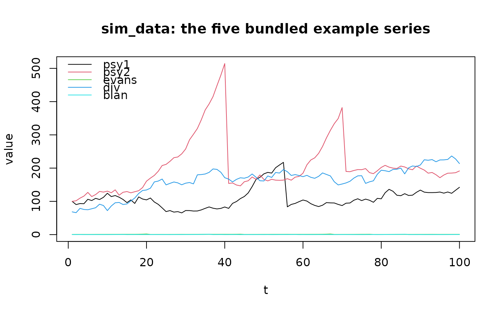
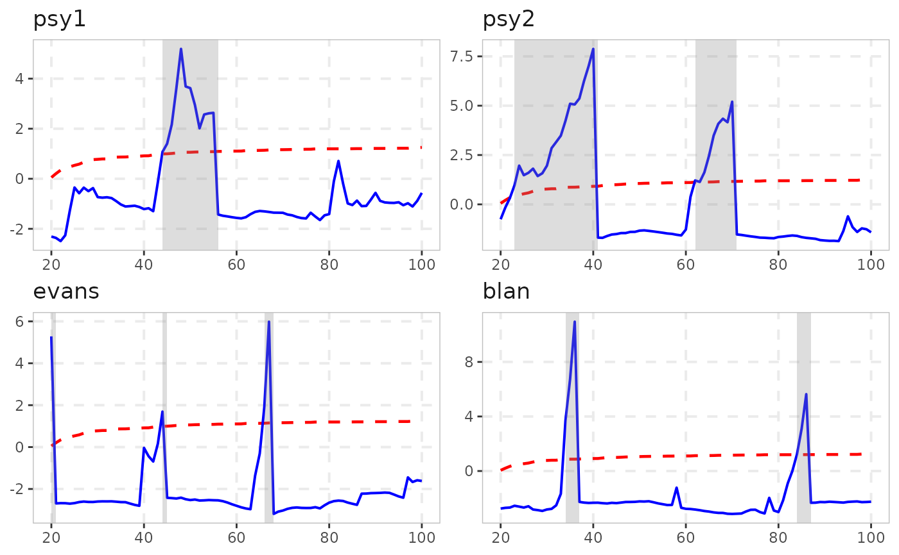

An artificial dataset containing series simulated from data generating processes
widely used in the literature on speculative bubbles. sim_data holds
five series of 100 observations each; sim_data_wdate is the same
data with an additional monthly date column. Both were generated by
data-raw/sim-data.R with set.seed(1122).
Format
A tibble with 100 rows and columns psy1 (sim_psy1()),
psy2 (sim_psy2()), evans (sim_evans()), div (sim_div()),
blan (sim_blan()); sim_data_wdate adds a date column
(monthly from 2000-01-01).
An object of class tbl_df (inherits from tbl, data.frame) with 100 rows and 6 columns.
See also
sim_psy1(), sim_psy2(), sim_evans(), sim_div(),
sim_blan() for the generating processes.
Examples
# Explore the five bundled series before running any test
matplot(sim_data, type = "l", lty = 1, xlab = "t", ylab = "value",
main = "sim_data: the five bundled example series")
legend("topleft", legend = colnames(sim_data), col = 1:5, lty = 1, bty = "n")

# \donttest{
# The usual next step: run radf() and plot with the bundled critical values
autoplot(radf(sim_data))
#> Using precomputed critical values for `cv`.

# }